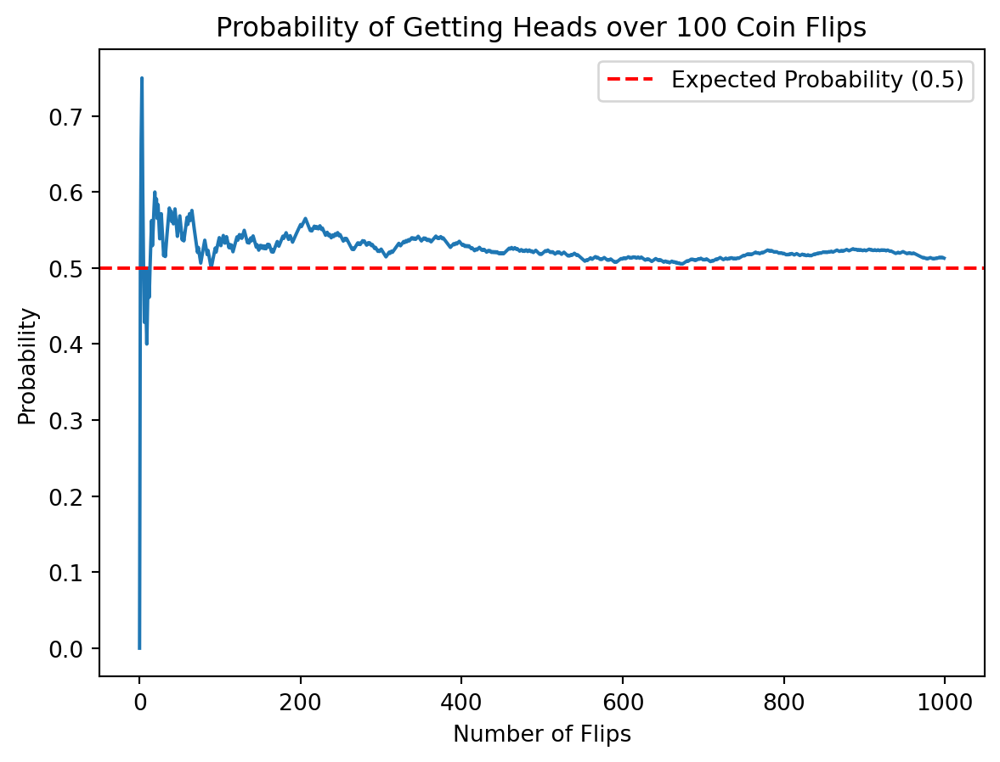
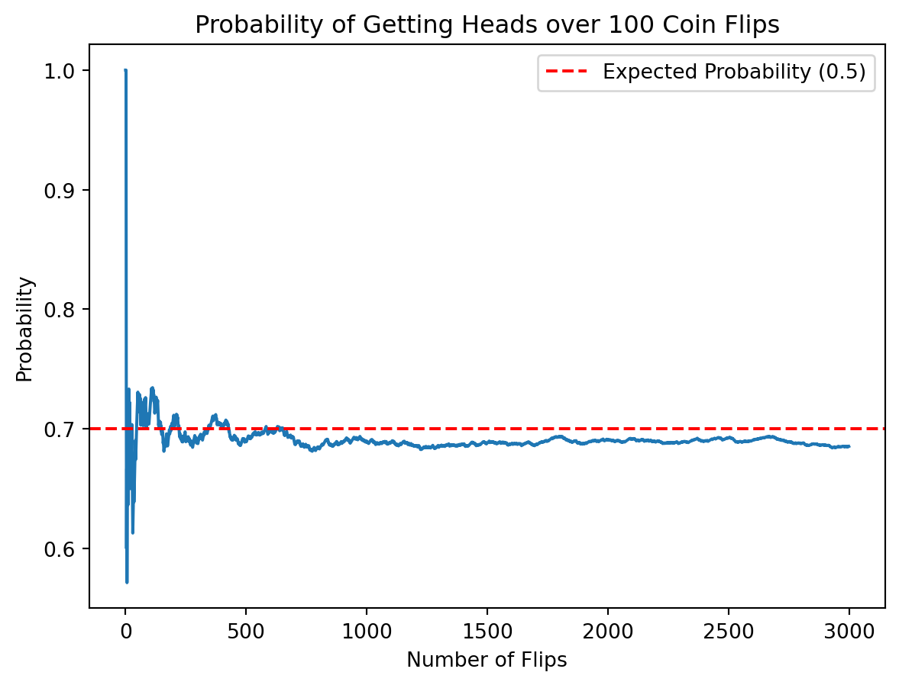

Probability theory, a branch of mathematics concerned with the analysis of random phenomena. The outcome of a random event cannot be determined before it occurs, but it may be any one of several possible outcomes. The actual outcome is considered to be determined by chance.
A random variable is a variable whose value is unknown or a function that assigns values to each of an experiment’s outcomes. Random variables are often designated by letters and can be classified as discrete, which are variables that have specific values, or continuous, which are variables that can have any values within a continuous range.
Let’s take an example of the coin flips. We’ll start with flipping a coin and finding out the probability. We’ll use H for ‘heads’ and T for ‘tails’. So now we flip our coin 100 times, and we want to answer some questions. What is the probability of getting heads over these 100 times? Will the probability change when we flip from 1 time to 100 times?
Code
import numpy as npimport matplotlib.pyplot as pltdef simulate_coin_flips(num_flips): outcomes = np.random.choice(['Heads', 'Tails'], size=num_flips) head_count = np.cumsum(outcomes =='Heads') probabilities = head_count / np.arange(1, num_flips +1)return probabilitiesdef plot_probability_change(probabilities): plt.plot(probabilities) plt.title('Probability of Getting Heads over 100 Coin Flips') plt.xlabel('Number of Flips') plt.ylabel('Probability') plt.axhline(0.5, color='red', linestyle='--', label='Expected Probability (0.5)') plt.legend() plt.show()# Simulate coin flips and plot the resultsnum_flips =1000probabilities = simulate_coin_flips(num_flips)plot_probability_change(probabilities)

Figure 1: flip coins
Based on the above figure Figure 1, we can find that at the early stage, the probability of getting heads may be 0.3, 0.6 or something else. However, when we flip coins for more and more times, the probability will be converged to about the expected probability 0.5.
Then next question we want to explore is that: What if we do some tricks to make the head side of coin heavier than the tail side of coin? In this case, let us assume head side of coin is 7 grams while the tail side is 3 grams.
Code
import numpy as npimport matplotlib.pyplot as pltdef simulate_coin_flips(num_flips): outcomes = np.random.choice(['Heads', 'Tails'], size=num_flips,p=[0.7,0.3]) head_count = np.cumsum(outcomes =='Heads') probabilities = head_count / np.arange(1, num_flips +1)return probabilitiesdef plot_probability_change(probabilities): plt.plot(probabilities) plt.title('Probability of Getting Heads over 100 Coin Flips') plt.xlabel('Number of Flips') plt.ylabel('Probability') plt.axhline(0.7, color='red', linestyle='--', label='Expected Probability (0.5)') plt.legend() plt.show()# Simulate coin flips and plot the resultsnum_flips =3000probabilities = simulate_coin_flips(num_flips)plot_probability_change(probabilities)

Figure 2: flip coins
Again, we can find that at the early stage, the probability of getting heads may be something random. However, when we flip coins for more and more times, the probability will be converged to about the expected probability 0.7.
Source Code
---title: 1. Probability theory and random variablesauthor: Barry Menglong Yaodate: '2023-11-29'format: html: code-fold: true code-tools: truecategories: - news - code - analysisjupyter: python3---Probability theory, a branch of mathematics concerned with the analysis of random phenomena. The outcome of a random event cannot be determined before it occurs, but it may be any one of several possible outcomes. The actual outcome is considered to be determined by chance.A random variable is a variable whose value is unknown or a function that assigns values to each of an experiment's outcomes. Random variables are often designated by letters and can be classified as discrete, which are variables that have specific values, or continuous, which are variables that can have any values within a continuous range.Let’s take an example of the coin flips. We’ll start with flipping a coin and finding out the probability. We’ll use H for ‘heads’ and T for ‘tails’. So now we flip our coin 100 times, and we want to answer some questions. What is the probability of getting heads over these 100 times? Will the probability change when we flip from 1 time to 100 times?```{python}#| label: fig-coin#| fig-cap: flip coinsimport numpy as npimport matplotlib.pyplot as pltdef simulate_coin_flips(num_flips): outcomes = np.random.choice(['Heads', 'Tails'], size=num_flips) head_count = np.cumsum(outcomes =='Heads') probabilities = head_count / np.arange(1, num_flips +1)return probabilitiesdef plot_probability_change(probabilities): plt.plot(probabilities) plt.title('Probability of Getting Heads over 100 Coin Flips') plt.xlabel('Number of Flips') plt.ylabel('Probability') plt.axhline(0.5, color='red', linestyle='--', label='Expected Probability (0.5)') plt.legend() plt.show()# Simulate coin flips and plot the resultsnum_flips =1000probabilities = simulate_coin_flips(num_flips)plot_probability_change(probabilities)```Based on the above figure @fig-coin, we can find that at the early stage, the probability of getting heads may be 0.3, 0.6 or something else. However, when we flip coins for more and more times, the probability will be converged to about the expected probability 0.5.Then next question we want to explore is that: What if we do some tricks to make the head side of coin heavier than the tail side of coin? In this case, let us assume head side of coin is 7 grams while the tail side is 3 grams.```{python}#| label: fig-coin2#| fig-cap: flip coinsimport numpy as npimport matplotlib.pyplot as pltdef simulate_coin_flips(num_flips): outcomes = np.random.choice(['Heads', 'Tails'], size=num_flips,p=[0.7,0.3]) head_count = np.cumsum(outcomes =='Heads') probabilities = head_count / np.arange(1, num_flips +1)return probabilitiesdef plot_probability_change(probabilities): plt.plot(probabilities) plt.title('Probability of Getting Heads over 100 Coin Flips') plt.xlabel('Number of Flips') plt.ylabel('Probability') plt.axhline(0.7, color='red', linestyle='--', label='Expected Probability (0.5)') plt.legend() plt.show()# Simulate coin flips and plot the resultsnum_flips =3000probabilities = simulate_coin_flips(num_flips)plot_probability_change(probabilities)```Again, we can find that at the early stage, the probability of getting heads may be something random. However, when we flip coins for more and more times, the probability will be converged to about the expected probability 0.7.